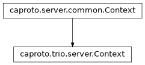

caproto.trio.server.Context¶

-
class
caproto.trio.server.Context(pvdb, interfaces=None)[source]¶ Methods
broadcast_beacon_loop(task_status)broadcaster_queue_loop(task_status)Reference broadcaster queue loop implementation
broadcaster_udp_server_loop(task_status)circuit_disconnected(circuit)Notification from circuit that its connection has closed
run(*[, log_pv_names, startup_hook])Start the server
server_accept_loop(listen_sock, *, task_status)stop()Stop the server
subscription_queue_loop(task_status)Reference implementation of the subscription queue loop
tcp_handler(client, addr)Handler for each new TCP client to the server
Attributes
pvdb_with_fieldsDynamically generated each time - use sparingly
shutdown_methodsNotify all ChannelData instances of the server shutdown
startup_methodsNotify all ChannelData instances of the server startup